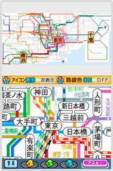
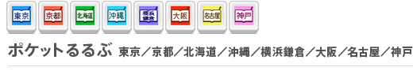
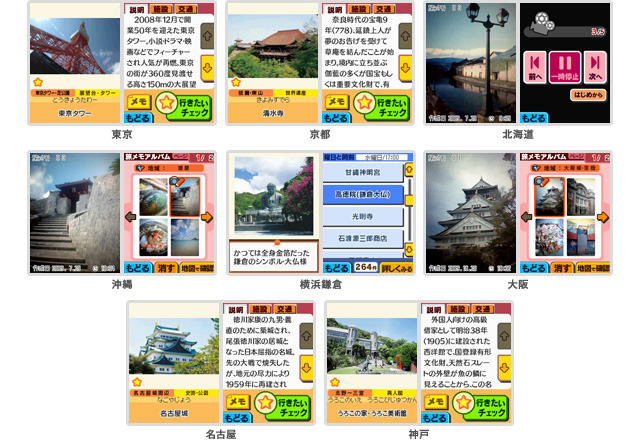

移動中や旅先で活躍するDSiで、路線図やおすすめスポットも確認。自分だけの地図にカスタマイズしたり、旅先の思い出を写真やメモで残したりと、便利なだけでなく、手を加える楽しみも見つけられるマップ系DSiウェアの紹介です。


DSiで乗り換えマスターに
株式会社東京糸井重里事務所が運営するウェブサイト「ほぼ日刊イトイ新聞」が作る「ほぼ日手帳」のオプションアイテム「ほぼ日の路線図2010」のDSiウェア版です。
全国7エリア（東京近郊、大阪近郊、名古屋近郊、札幌、仙台、広島、福岡）のJR線・私鉄・地下鉄の各路線に加えて、新幹線の路線図が収録されたソフトです。
上下画面をその地域全体の路線図と一部を拡大した路線図に分けて表示させることができます。また、手書きで駅名を検索したり、よく利用する駅に「ブックマーク」を追加するだけでなく、終電時刻などの手書きメモやDSiで撮影した駅周辺の写真を貼り付けたり、色分けされた各路線をタッチして必要な路線だけに色をつけたりと、自分だけの路線図にカスタマイズすることも可能です。これひとつあれば、お急ぎの際に必要な路線図を簡単に探し出して確認することはもちろん、路線図に自分の手を加えて作成する楽しみを味わうことができるでしょう。
なお『ほぼ日路線図 2010 全国7エリア+新幹線マップ』は2010年2月3日より配信される予定ですが、『ほぼ日路線図 2009』をお持ちの方は、無料でバージョンアップが可能です。
©2009 Nintendo ©HOBO NIKKAN ITOI SHINBUN

各地のおすすめスポットを網羅
旅行情報誌『るるぶ』による各地のおすすめスポット情報をDSiで確認できる、旅行ガイドソフトです。2010年2月1日現在配信されている8つの各エリアは、それぞれ約400件のスポットが収録されていて、旅行前でも旅先でも、すぐに行きたい場所を見つけることができます。
スポットの検索は、手書きでのフリーワード検索のほか、目的別、行く予定の曜日や時刻などの条件で絞りこめます。また、定番スポットを1日で回れるおすすめツアーの情報も用意されています。見つけたスポットは「行きたいチェック」のリストに登録しておくこともできます。
登録したスポットは、地域ごとの地図上で確認することができます。地図上で見つけたスポットを新たにリストに登録したり、手書きのメモを添えて整理することも可能です。
旅先では、DSiで写真を撮影し、写真の上に手書きの「旅メモ」を添えてアルバムに保存、地図上に貼り付けられます。旅行から戻ったら、こうした写真をスライドショー形式で再生したり、SDメモリーカードに書き出してパソコンや携帯電話に転送したりして、思い出を振り返って楽しむこともできます。
©2009 Nintendo ©2009 JTB Publishing
